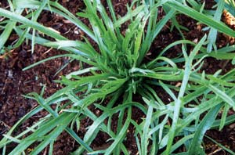
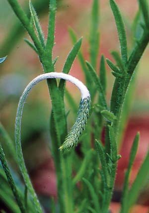
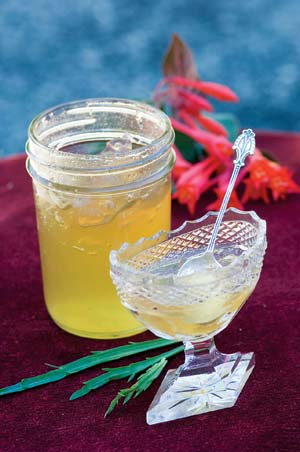

You’ve probably never heard of buckshorn plantain (pronounced bucks-horn), but this nutritious salad green has been grown in the United States since at least Colonial times. It was used then as a medicinal plant, thought to relieve fevers and protect against a host of other maladies. It was also popular in fancy jellies (see recipe below).
Today, buckshorn plantain (Plantago coronopus) is often known as “minutina” or “herba stella,” and is used mostly in salads or as a garnish. The succulent, crunchy leaves are best when harvested young, and taste a little like parsley, spinach or kale, but sweeter and nuttier. The flavor is best before the plant begins to flower. The flowers draw up the essential oils, i.e. flavor, from the leaves. But the flowers themselves also are great in salads.
Ten years ago, when I first wrote about buckshorn plantain in my book Heirloom Vegetable Gardening, England and France were just about the only places you could find seeds. Even there, seeds were limited to herb specialists. Today this attractive potherb is much easier to find, even showing up on some restaurant menus.
The plant’s common name is derived from the shape of its leaves: narrow, spiky and antlerlike. Buckshorn plantain grows wild along the pebbly coastline of Europe and in widely scattered areas of the Mediterranean. It thrives in cool, rainy weather, and because of its seaside origin, this plantain doesn’t mind saline soil. This natural adaptation allows it to grow where many other plants won’t. It will withstand a great deal of abuse - almost anything except extremely long, frigid winters. In its natural mild-winter habitat the plant is biennial, but in areas of the United States where temperatures can dip below zero, it should be treated as an annual.
In short season areas, buckshorn plantain can be overwintered in unheated greenhouses, and some growers have had success growing it in tunnels. I start my plants in a greenhouse, then transfer them out of doors in early April after the threat of hard frost passes. You also can sow seeds directly in the garden in early spring. Plantain can survive light frosts without damage. Give the plants plenty of room - about 8 inches around each - and keep them watered.
If planted by early April, the plants will produce tender greens until the end of June, when they typically run to seed. Be sure to save this seed for fall planting! Just place the ripe, brown seed heads in a paper bag and rub them together to knock the fine dust (seeds) to the bottom of the bag. Then discard the seed heads. If you protect your fall round of plants with straw mulch, they should last until Christmas.
Seed companies may also list buckshorn plantain as “minutina” or “herba stella.”
Fedco Seeds
P.O. Box 520
Waterville, ME 04903
(207) 873-7333
Johnny’s Selected Seeds
955 Benton Avenue
Winslow, ME 04901
(877) 564-6697
Kitchen Garden Seeds
P.O. Box 638
Bantam, CT 06750
(860) 567-6086
Mint jelly move over! This jelly is an old-time favorite, with a surprising taste: refreshing with hints of flowers and citrus. Basically, it is an extremely strong herbal tea, only gelled. It’s a great match for herbed breads and crackers, sharp cheeses and even poultry. Your final product should be as clear as possible, but it’s fine to add a few leaves for ornamental effect.
8 ounces fresh buckshorn plantain leaves
3 cups water, preferably bottled spring water*
2 small (3-inch) sticks of cinnamon
1 cup dry white wine
1/2 cup fresh lemon juice strained through a jelly bag
1 package low-sugar Sure-Jell pectin (if using another agent, follow general instructions for mint jelly)
3 cups sugar
Wash plantain leaves at least twice. (The plant grows low to the ground, and the leaves hold onto a surprising amount of dirt and grit.) Spin dry or pat dry with paper towels. Chop the leaves and add to a large saucepan with water, cinnamon and wine. Cover and bring to a boil over high heat. As soon as the water boils, the leaves will turn bright green. At this stage, remove from heat but keep covered. Let stand for at least 30 minutes (overnight is better). Do not remove the lid. Strain through a jelly bag or several thicknesses of closely woven cheesecloth and combine with strained lemon juice. Add pectin and whisk to remove lumps. Bring mixture to a rolling boil in a nonreactive pan - avoid aluminum and copper - over high heat. Add sugar, keeping at full boil for 1 minute. Pour jelly into hot, sterilized jars. Seal and label. Store in a cool, dark place until needed. Yields 6 cups.
*When making jellies and pickles, use bottled spring water or untreated well water. Chemically treated drinking water may alter the flavor and degrade the shelf life of certain foods, especially pickles and preserves.
Heirloom Vegetable Gardening: A Master Gardener’s Guide to Planting, Seed Saving and Cultural History by William Woys Weaver, now on CD. If you want to explore the fabulous flavors, fascinating history and amazing diversity of vegetables, this is the book to start with. Food historian and Mother Earth contributing editor Will Weaver profiles 280 heirloom varieties, with authoritative growing advice and incredible recipes. First published in 1997, Heirloom Vegetable Gardening has since been out of print, with used copies selling online for as much as $300. We are proud to present the original text, with color photos, as a digital book on CD-ROM. Order now.
|
 ROB CARDILLO Buckshorn plantain, ready for harvesting. |
 ROB CARDILLO Once this immature buckshorn plantain seed head becomes erect and turns brown, it’s time to collect seeds for your next planting. |
 ROB CARDILLO Old-fashioned buckshorn plantain jelly. |